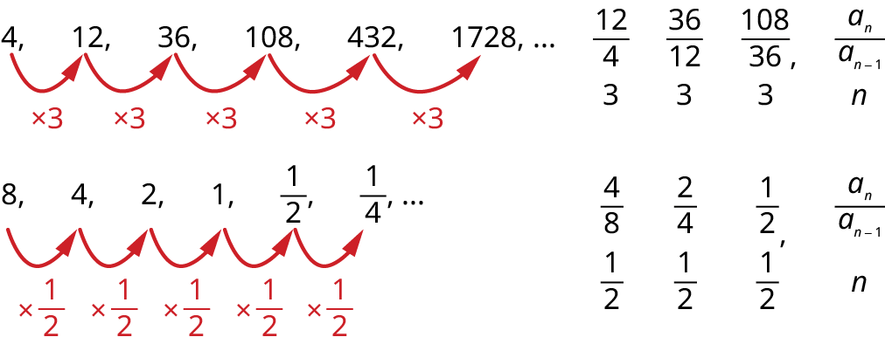
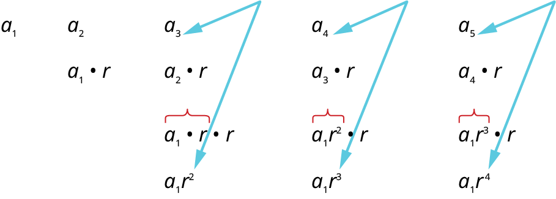
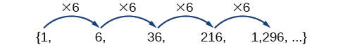
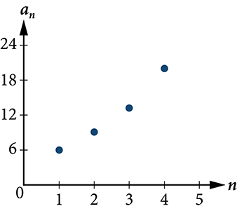
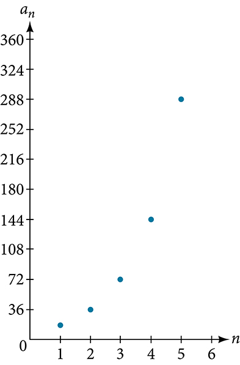
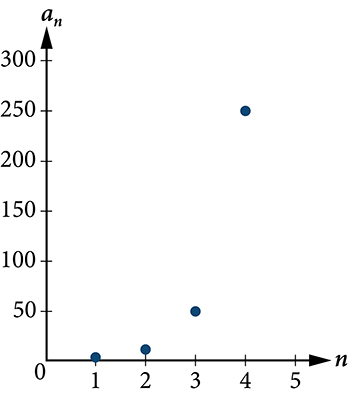
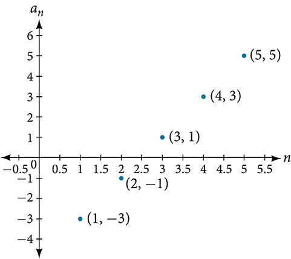
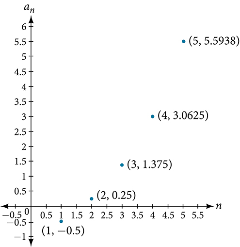
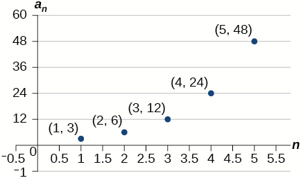
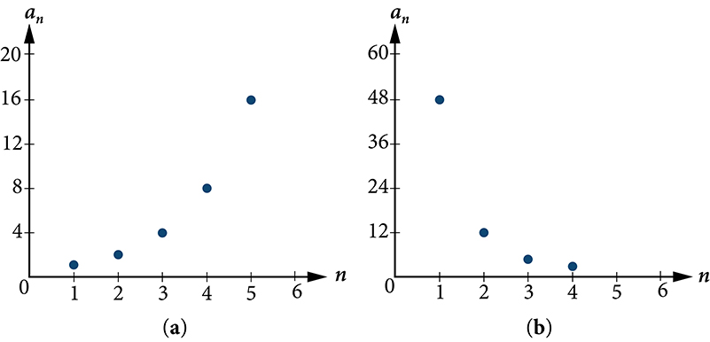

Geometric Sequences
Learning Objectives
- Determine if a sequence is geometric (IA 12.3.1).
- Find the general term (nth term) of a geometric sequence (IA 12.3.2).
Objective 1: Determine if a sequence is geometric (IA 12.3.1)
A sequence is called a geometric sequence if the ratio between consecutive terms is always the same.
The ratio between consecutive terms in a geometric sequence is r, the common ratio, where n is greater than or equal to two.

Determine if each sequence is geometric. If so, indicate the common ratio.
ⓐ
ⓑ
Solution
To determine if the sequence is geometric, we find the ratio of the consecutive terms shown.
ⓐ
ⓑ
Practice Makes Perfect
Determine if each sequence is geometric. If so, indicate the common ratio.
, , , , , …
| Find the ratio of consecutive terms. | |
8, 4, 2, 1, , , …
| Find the ratio of consecutive terms. | |
Write the first five terms of the sequence where the first term is 3 and the common ratio is
Solution
We start with the first term and multiply it by the common ratio. Then we multiply that result by the common ratio to get the next term, and so on.
The sequence is
Practice Makes Perfect
Write the first five terms of the sequence where the first term is 7 and the common ratio is .
| 7 | ||||
| The sequence is: ________________________________________ | ||||
Objective 2: Find the general term (nth term) of a geometric sequence (IA 12.3.2)
Let’s find the formula for the general term of a geometric sequence.
Let’s write the first few terms of the sequence where the first term is and the common ratio is . We will then look for a pattern.

Find the general term (nth term) of a geometric sequence.
- ⓐ Find the thirteenth term of a sequence where the first term is 81 and the common ratio is r=1/3.
- ⓑ Find the ninth term of the sequence 6, 18, 54, 162, 486, 1458, … Then find the general term for the sequence.
Solution
- ⓐ
Find the thirteenth term of a sequence where the first term is 81 and the common ratio is r=1/3.
. To find the 13th term, use the formula with Substitute Simplify - ⓑ
Find the ninth term of the sequence 6, 18, 54, 162, 486, 1458, … Then find the general term for the sequence.
. Let’s first determine and the common ratio To find the 9th term, use the formula with and n=9.
Substitute these values and simplifyTo find the general term, substitute and into the formula
Practice Makes Perfect
Find the general term (nth term) of a geometric sequence.
Find the sixteenth term of a sequence where the first term is 11 and the common ratio is −6.
Find the 10th term of the sequence 9, 18, 36, 72, 144, 288, …. Then give the formula for the general term.
Many jobs offer an annual cost-of-living increase to keep salaries consistent with inflation. Suppose, for example, a recent college graduate finds a position as a sales manager earning an annual salary of $26,000. He is promised a 2% cost of living increase each year. His annual salary in any given year can be found by multiplying his salary from the previous year by 102%. His salary will be $26,520 after one year; $27,050.40 after two years; $27,591.41 after three years; and so on. When a salary increases by a constant rate each year, the salary grows by a constant factor. In this section, we will review sequences that grow in this way.
Finding Common Ratios
The yearly salary values described form a geometric sequence because they change by a constant factor each year. Each term of a geometric sequence increases or decreases by a constant factor called the common ratio. The sequence below is an example of a geometric sequence because each term increases by a constant factor of 6. Multiplying any term of the sequence by the common ratio 6 generates the subsequent term.

Finding Common Ratios
Is the sequence geometric? If so, find the common ratio.
- ⓐ
- ⓑ
Solution
Divide each term by the previous term to determine whether a common ratio exists.
- ⓐ
The sequence is geometric because there is a common ratio. The common ratio is 2.
- ⓑ
The sequence is not geometric because there is not a common ratio.
Writing Terms of Geometric Sequences
Now that we can identify a geometric sequence, we will learn how to find the terms of a geometric sequence if we are given the first term and the common ratio. The terms of a geometric sequence can be found by beginning with the first term and multiplying by the common ratio repeatedly. For instance, if the first term of a geometric sequence is and the common ratio is we can find subsequent terms by multiplying to get then multiplying the result to get and so on.
The first four terms are
Writing the Terms of a Geometric Sequence
List the first four terms of the geometric sequence with and
Solution
Multiply by to find Repeat the process, using to find and so on.
The first four terms are
Using Recursive Formulas for Geometric Sequences
A recursive formula allows us to find any term of a geometric sequence by using the previous term. Each term is the product of the common ratio and the previous term. For example, suppose the common ratio is 9. Then each term is nine times the previous term. As with any recursive formula, the initial term must be given.
Using Recursive Formulas for Geometric Sequences
Write a recursive formula for the following geometric sequence.
Solution
The first term is given as 6. The common ratio can be found by dividing the second term by the first term.
Substitute the common ratio into the recursive formula for geometric sequences and define
Analysis
The sequence of data points follows an exponential pattern. The common ratio is also the base of an exponential function as shown in Figure 2

Using Explicit Formulas for Geometric Sequences
Because a geometric sequence is an exponential function whose domain is the set of positive integers, and the common ratio is the base of the function, we can write explicit formulas that allow us to find particular terms.
Let’s take a look at the sequence This is a geometric sequence with a common ratio of 2 and an exponential function with a base of 2. An explicit formula for this sequence is
The graph of the sequence is shown in Figure 3.

Writing Terms of Geometric Sequences Using the Explicit Formula
Given a geometric sequence with and find
Solution
The sequence can be written in terms of the initial term and the common ratio
Find the common ratio using the given fourth term.
Find the second term by multiplying the first term by the common ratio.
Analysis
The common ratio is multiplied by the first term once to find the second term, twice to find the third term, three times to find the fourth term, and so on. The tenth term could be found by multiplying the first term by the common ratio nine times or by multiplying by the common ratio raised to the ninth power.
Writing an Explicit Formula for the th Term of a Geometric Sequence
Write an explicit formula for the term of the following geometric sequence.
Solution
The first term is 2. The common ratio can be found by dividing the second term by the first term.
The common ratio is 5. Substitute the common ratio and the first term of the sequence into the formula.
The graph of this sequence in Figure 4 shows an exponential pattern.

Solving Application Problems with Geometric Sequences
In real-world scenarios involving geometric sequences, we may need to use an initial term of instead of In these problems, we can alter the explicit formula slightly by using the following formula:
Solving Application Problems with Geometric Sequences
In 2013, the number of students in a small school is 284. It is estimated that the student population will increase by 4% each year.
- ⓐWrite a formula for the student population.
- ⓑEstimate the student population in 2020.
Solution
- ⓐ
The situation can be modeled by a geometric sequence with an initial term of 284. The student population will be 104% of the prior year, so the common ratio is 1.04.
Let be the student population and be the number of years after 2013. Using the explicit formula for a geometric sequence we get
- ⓑ
We can find the number of years since 2013 by subtracting.
We are looking for the population after 7 years. We can substitute 7 for to estimate the population in 2020.
The student population will be about 374 in 2020.
Key Equations
| recursive formula for term of a geometric sequence | |
| explicit formula for term of a geometric sequence |
Key Concepts
- A geometric sequence is a sequence in which the ratio between any two consecutive terms is a constant.
- The constant ratio between two consecutive terms is called the common ratio.
- The common ratio can be found by dividing any term in the sequence by the previous term. See Example 4.
- The terms of a geometric sequence can be found by beginning with the first term and multiplying by the common ratio repeatedly. See Example 5 and Example 7.
- A recursive formula for a geometric sequence with common ratio is given by for .
- As with any recursive formula, the initial term of the sequence must be given. See Example 6.
- An explicit formula for a geometric sequence with common ratio is given by See Example 8.
- In application problems, we sometimes alter the explicit formula slightly to See Example 9.
Section Exercises
Verbal
What is a geometric sequence?
Solution
A sequence in which the ratio between any two consecutive terms is constant.
How is the common ratio of a geometric sequence found?
What is the procedure for determining whether a sequence is geometric?
Solution
Divide each term in a sequence by the preceding term. If the resulting quotients are equal, then the sequence is geometric.
What is the difference between an arithmetic sequence and a geometric sequence?
Describe how exponential functions and geometric sequences are similar. How are they different?
Solution
Both geometric sequences and exponential functions have a constant ratio. However, their domains are not the same. Exponential functions are defined for all real numbers, and geometric sequences are defined only for positive integers. Another difference is that the base of a geometric sequence (the common ratio) can be negative, but the base of an exponential function must be positive.
Algebraic
For the following exercises, find the common ratio for the geometric sequence.
Solution
The common ratio is
For the following exercises, determine whether the sequence is geometric. If so, find the common ratio.
Solution
The sequence is geometric. The common ratio is 2.
Solution
The sequence is geometric. The common ratio is
Solution
The sequence is geometric. The common ratio is
For the following exercises, write the first five terms of the geometric sequence, given the first term and common ratio.
Solution
For the following exercises, write the first five terms of the geometric sequence, given any two terms.
Solution
For the following exercises, find the specified term for the geometric sequence, given the first term and common ratio.
The first term is and the common ratio is Find the 5th term.
The first term is 16 and the common ratio is Find the 4th term.
Solution
For the following exercises, find the specified term for the geometric sequence, given the first four terms.
Find
Find
Solution
For the following exercises, write the first five terms of the geometric sequence.
Solution
For the following exercises, write a recursive formula for each geometric sequence.
Solution
Solution
Solution
Solution
For the following exercises, write the first five terms of the geometric sequence.
Solution
For the following exercises, write an explicit formula for each geometric sequence.
Solution
Solution
Solution
Solution
For the following exercises, find the specified term for the geometric sequence given.
Let Find
Let Find
Solution
For the following exercises, find the number of terms in the given finite geometric sequence.
Solution
There are terms in the sequence.
Graphical
For the following exercises, determine whether the graph shown represents a geometric sequence.


Solution
The graph does not represent a geometric sequence.
For the following exercises, use the information provided to graph the first five terms of the geometric sequence.
Solution

Extensions
Use recursive formulas to give two examples of geometric sequences whose 3rd terms are
Solution
Answers will vary. Examples: and
Use explicit formulas to give two examples of geometric sequences whose 7th terms are
Find the 5th term of the geometric sequence
Solution
Find the 7th term of the geometric sequence
At which term does the sequence exceed
Solution
The sequence exceeds at the 14th term,
At which term does the sequence begin to have integer values?
For which term does the geometric sequence first have a non-integer value?
Solution
is the first non-integer value
Use the recursive formula to write a geometric sequence whose common ratio is an integer. Show the first four terms, and then find the 10th term.
Use the explicit formula to write a geometric sequence whose common ratio is a decimal number between 0 and 1. Show the first 4 terms, and then find the 8th term.
Solution
Answers will vary. Example: Explicit formula with a decimal common ratio: First 4 terms:
Is it possible for a sequence to be both arithmetic and geometric? If so, give an example.
Analysis
The graph of each sequence is shown in Figure 1. It seems from the graphs that both (a) and (b) appear have the form of the graph of an exponential function in this viewing window. However, we know that (a) is geometric and so this interpretation holds, but (b) is not.
